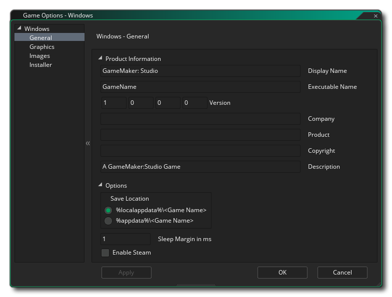
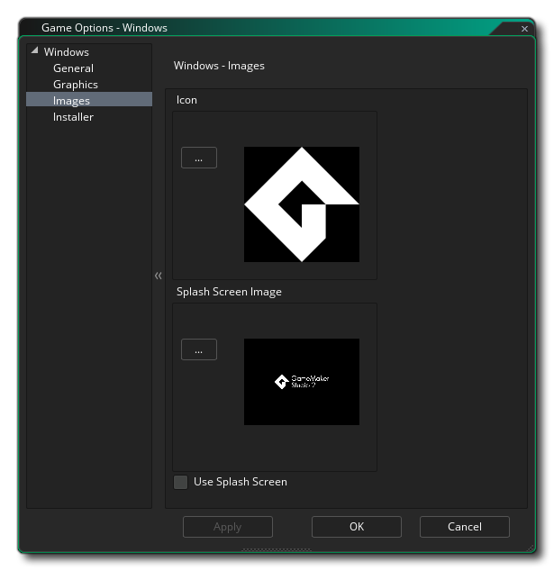

In diesem Abschnitt werden die verschiedenen verfügbaren Optionen beschrieben, die steuern, wie Ihre Windows-Spielprojekte kompiliert werden. Die verschiedenen Abschnitte sind:

Auf der Seite " Allgemein " für Windows-Spiele sollten Sie die erforderlichen Informationen bereitstellen, damit Windows anzeigen kann, wann Ihr Spiel installiert wurde und ausgeführt wird. Diese Informationen werden im Abschnitt Produktinformationen angezeigt und sollten vollständig ausgefüllt werden.
Im Abschnitt Optionen dieses Fensters können Sie auswählen, wo das Spielpaket installiert werden soll, entweder " %localappdata% " oder " %appdata% "Ordner. Sie können hier auch die Windows Sleep Margin einstellen. Diese Option bezieht sich auf das Reduzieren von Stottern, wenn Sie Ihr Spiel auf bestimmten Systemen ausführen. Wenn Ihr Spiel schneller läuft als Ihre Zimmergeschwindigkeit," schläft " GameMaker Studio 2 für die verbleibenden Zeit, aber dieser Schlaf kann sehr ungenau sein und Sie können oft länger als nötig schlafen, was dazu führt, dass Ihr Rahmen länger braucht, was Stottern verursacht. Um das zu umgehen, können wir weniger Zeit schlafen und dann in einer engen Schleife sitzen Der Rest der Zeit, um es genauer zu machen - obwohl das Problem beim Sitzen in einer Schleife ist, dass es die CPU-Auslastung erhöht, was wiederum dazu führen kann, dass Ihre CPU-Temperaturen steigen und Ihr Lüfter schneller läuft. Standardmäßig ist dieser Wert Wählen Sie 10 und in 99,99% der Fälle werden Sie damit zufrieden sein, aber für Low-End-Maschinen oder für Maschinen mit vielen Hintergrundprozessen ist dies möglicherweise keine ideale Lösung (oder auch für High-End-Maschinen) und ein Wert von 1 oder 15 oder etwas ng kann erforderlich sein. Beachten Sie jedoch, dass dies eine systemspezifische Konfiguration ist, und was auf Ihrem Build-Rechner funktioniert, ist möglicherweise für einen anderen Benutzer nicht geeignet und sollte im Zweifelsfall auf 10 gesetzt werden.
Die letzte Option ist die Aktivierung von Steam in Ihrem Spiel. Wenn Sie diese Option aktivieren, vergewissern Sie sich, dass das Steam Works-SDK installiert ist (siehe hier ) und dass Sie die Steam App-ID zu den allgemeinen Optionen für das Spiel hinzugefügt haben.
Die Grafikoptionen sind diejenigen, die Sie konfigurieren sollten, um zu bestimmen, wie Ihr Spiel die Grafikkarte Ihres Ziel-Windows-PCs verwendet. Die folgenden Optionen sind enthalten, die Sie ändern können:
- Cursor anzeigen: Wenn diese Option aktiviert ist, wird der normale Windows-Cursor angezeigt. Wenn Sie die Markierung entfernen, wird kein Cursor angezeigt, es sei denn, Sie haben einen Cursor in Ihrem Code erstellt. Dies ist standardmäßig aktiviert.
- Vollbild starten: Wenn diese Option aktiviert ist, wird das Spiel im Vollbildmodus gestartet, andernfalls wird es im Fenster angezeigt. Dies ist standardmäßig deaktiviert.
- Fullscreen-Umschaltung zulassen: Mit dieser Option kann der Benutzer mithilfe der Windows-Standardverknüpfungen von Vollbild zu Fenster und zurück wechseln. Dies ist standardmäßig deaktiviert.
- Interpolieren von Farben zwischen Pixeln: Schaltet die Interpolation ein, die Pixel im Grunde "glättet". Für knackige Pixelgrafiken sollte es ausgeschaltet sein, aber wenn Sie schöne Alpha-Mischungen und geglättete Kantengrafiken haben, ist es besser, sie eingeschaltet zu lassen. Dies ist standardmäßig aktiviert.
- Verwenden Sie die Synchronisierung, um ein Aufreißen zu vermeiden: Dadurch wird die V-Synchronisierung ein- oder ausgeschaltet (v-sync wird verwendet, um die Aktualisierungsgeschwindigkeit des Spiels mit der Aktualisierungsrate des Monitors zu synchronisieren). Beachten Sie, dass wenn Sie ein Spiel mit einer Zimmergeschwindigkeit von 120 haben und der Spieler einen Monitor mit einer Wiederholungsrate von 60 hat, wird Ihre Spielgeschwindigkeit auf 60 eingestellt, wenn Sie diese Option aktivieren. Dies ist standardmäßig deaktiviert.
- Dem Player erlauben, die Größe des Spielfensters zu ändern: Wenn Sie diese Option aktivieren, kann der Benutzer die Größe des Spielfensters ändern (die Option Randloses Fenster muss deaktiviert sein , damit dies funktioniert). Diese Option ist standardmäßig deaktiviert.
- Borderless Window: Wenn Sie diese Option aktivieren, wird Ihr Spiel mit einem randlosen Fenster ausgeführt. Dabei werden die Schaltflächen zum Minimieren, Maximieren und Schließen sowie der Spieltitel entfernt. Dies ist standardmäßig deaktiviert.
- Skalierung: Hier können Sie das Seitenverhältnis beibehalten (so dass ein 4: 3-Raum auf einem 16: 9 "Letterboxed" ist) oder vollständig skalieren (das Bild auf den gesamten Bildschirm ausdehnen).
WARNUNG! Durch das Ausschalten der Benutzeroberfläche werden alle in den Windows-Spieloptionen festgelegten Skalierungsoptionen deaktiviert, bis sie wieder eingeschaltet werden. Weitere Informationen finden Sie unter Die Anwendungsoberfläche.Schließlich gibt es noch die Möglichkeit, die Größe der Textur-Seite festzulegen. Die Standardgröße (und die meist kompatible) ist 2048x2048, aber Sie können zwischen 256x256 und 8192x8192 wählen! Es gibt auch eine Schaltfläche mit der Bezeichnung View, die die Textur-Seiten für diese Plattform generiert und dann ein Fenster öffnet, damit Sie sehen können, wie sie aussehen. Dies kann sehr nützlich sein, wenn Sie sehen möchten, wie die Strukturseiten strukturiert sind und um zu verhindern, dass Strukturseiten größer (oder kleiner) als nötig sind.
HINWEIS: Je größer die Textur-Seite ist, desto weniger kompatibel ist Ihr Spiel auf PCs mit niedrigeren Spezifikationen.

Im Bereich Bilder liefern Sie die Bilder, die Ihr Spiel benötigt. Unter Windows müssen Sie eine Symboldatei (die in .ico Format) und auch ein Begrüßungsbildschirm (der sein kann .png, .bmp, .jpg oder .gif Format). Der Splash - Screen, während das Spiel geladen gezeigt werden, und kann durch die Überprüfung der Verwendung Splash Screen - Option (die ausgeschaltet ist standardmäßig aktiviert ) aktiviert oder deaktiviert werden.
Es ist erwähnenswert, dass GameMaker Studio 2 ein Project Image Generator- Tool enthält, mit dem automatisch alle Bilder erstellt werden können, die für die verschiedenen Zielplattformen benötigt werden, auf denen das Spiel kompiliert wird. Wenn Sie dieses Tool verwenden, sollten Sie die erstellten Bilder überarbeiten, um sicherzustellen, dass sie Ihren Anforderungen entsprechen.
Windows-Spiele können mit einem Installer erstellt werden und hier können Sie die verschiedenen Einstellungen und Grafiken definieren, die GameMaker Studio 2 beim Erstellen verwendet. Zuallererst haben wir die grafischen Optionen, die das Aussehen des Installers selbst bestimmen:
- Fertig: Die Grafik, die auf der Seite "Fertig" des Installationsprogramms angezeigt wird. Muss im *.bmp Format sein und 164x314px messen.
- Header: Die Grafik, die angezeigt wird, während das Installationsprogramm ausgeführt wird. Muss im *.bmp Format sein und 150x57px messen.
Sie können auch auf eine bestimmte Lizenzvereinbarung (ein Beispiel ist in GameMaker Studio 2 ) und ein benutzerdefiniertes NSI-Skript (Details hier ) zeigen, falls Sie eines benötigen.